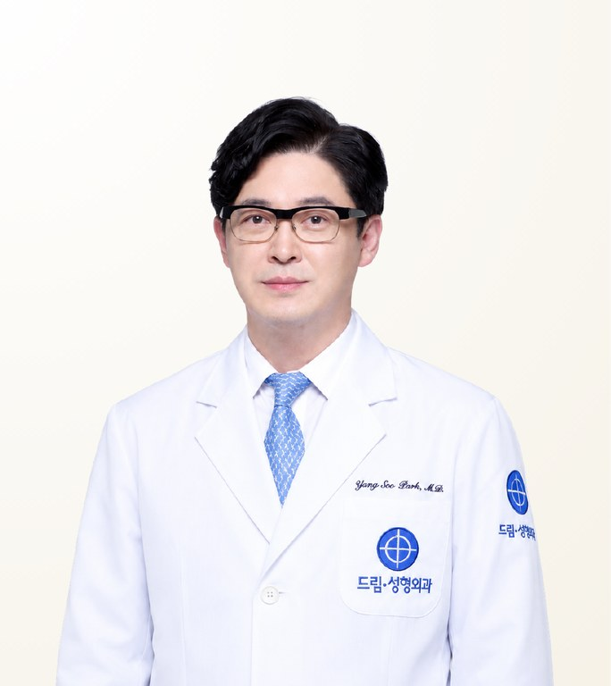

Reviewed by STMSTYLE
Park Yang-Soo
พัค ยังซู · 박양수
Dream Plastic Surgery · Board-certified Plastic Surgeon, PhD
- Eye Surgery and Revision
- Rhinoplasty
- Complex Revision Eye Surgery
- Experience
- 33 years in practice (board-certified in plastic surgery since 1993)
- Clinical experience
- 20,000+ cases
- Recommended Stay
- Eight days and seven nights as standard, adjusted according to the surgery
About the Doctor
Dr. Park Yang-Soo is a board-certified plastic surgeon and the director of Dream Plastic Surgery in Seoul, known for natural eye and nose surgery and complex revision eye surgery. Board-certified since 1993, he has 33 years in practice and more than 20,000 cases, and designs the eyes and nose within the proportion of the whole face from forehead to jawline.
Case Expertise
Eye Surgery and Revision
Covers double eyelid surgery, ptosis correction and the correction of problems remaining after previous surgery, with the line and height set within the proportion from forehead and brow to nose and jawline.
Rhinoplasty
The height and length of the nose are set within the horizontal and vertical proportion of the face, guided by the line that suits that face rather than a shape in fashion.
Complex Revision Eye Surgery
For cases that cannot be resolved in a single operation after several previous surgeries. The extent of possible improvement and its limits are explained first, and where necessary the possibility of staged retouching is set out in advance.
Other treatments available
Materials & Equipment
Video
Philosophy of Care
He values finding a natural line by considering the whole proportion from forehead to jawline and the horizontal and vertical balance, rather than treating the face as an eye or a nose alone. Instead of forcing change, he explains honestly the extent to which improvement is actually possible, and where a case cannot be resolved in one operation, such as complex revision eye surgery, the possibility of staged treatment is shared in advance. A detailed yet warm manner in consultation is characteristic.
— Park Yang-Soo
STMSTYLE Assessment
STMSTYLE has maintained a relationship with Dr. Park Yang-Soo for around twenty years, observing his surgical results and manner of practice over a long period. STMSTYLE rates highly his ability to find the most natural balance by considering the forehead, eyes, nose and jawline together with the horizontal and vertical proportion of the face. He does not press for unnecessary surgery, explains honestly what can be improved and what the limits are, and in severe revision eye cases responsibly explains the possibility of staged retouching in advance.
STMSTYLECareer & Training
View full background
Education
- Seoul National University College of Medicine
- Master's degree and PhD, Seoul National University Graduate School
Licences & certification
- Board-certified Plastic Surgeon (Korea) 1993
Career
- Director, Dream Plastic Surgery
- CEO, Dream Medical Group
- Plastic Surgery Specialist, Seoul National University Hospital
- Former Adjunct Professor, Seoul National University and Sungkyunkwan University Colleges of Medicine
Frequently Asked Questions
Is Dr. Park Yang-Soo good at revision eye surgery?
Yes. Dr. Park Yang-Soo is known for complex revision eye surgery, including cases after several previous operations. He explains honestly what can be improved and what the limits are, and if one operation cannot resolve the issue, he sets out a staged approach in advance. The final plan is set at an in-person consultation.
What kind of patients is Dr. Park Yang-Soo best suited for?
Dr. Park Yang-Soo suits patients who want natural-looking eyes and nose in harmony with the whole face, as well as those seeking correction of previous eye surgery. He does not recommend unnecessary surgery and consults in a detailed, warm manner.
How experienced is Dr. Park Yang-Soo?
Dr. Park Yang-Soo has been a board-certified plastic surgeon since 1993, with 33 years in practice and more than 20,000 cases. He holds master's and doctoral degrees from Seoul National University and has served as an adjunct professor at Seoul National University and Sungkyunkwan University.
How long should I stay in Korea for surgery with Dr. Park Yang-Soo?
The standard stay for surgery with Dr. Park Yang-Soo is eight days and seven nights, adjusted according to the procedure. For complex revision eye surgery, the exact length is confirmed once the treatment plan is set.
Does Dr. Park Yang-Soo operate personally, and can I consult through STMSTYLE?
Dr. Park Yang-Soo performs the surgery personally. STMSTYLE has worked with him for around twenty years and coordinates initial consultations, scheduling and conditions with Dream Plastic Surgery from Bangkok. Final decisions are made at an in-person consultation.
Sources
View sources and review record
| Item | Source | Checked |
|---|---|---|
| Director role, education and adjunct professorships | Dream Plastic Surgery official materials | 2026-08-31 |
| Year of board certification (1993) | Public physician information and published interviews | 2026-08-31 |
| Doctor introduction video | Published YouTube video | 2026-08-31 |
| Treatment approach and long-term surgical outcomes | STMSTYLE direct review through around twenty years of collaboration, in-person meetings and patient coordination | 2026-08-31 |
Review record · 2026-08-31
STMSTYLE reviewed Dr. Park Yang-Soo's profile through around twenty years of collaboration, in-person meetings and consultations, patient coordination and cross-checking against Dream Plastic Surgery's official materials.